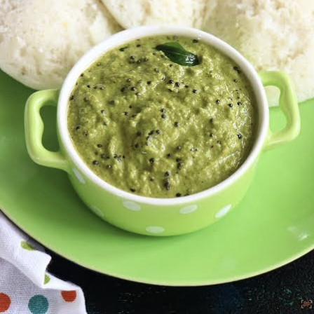

Ingredients:
- 1 cup fresh mint leaves (pudina)
- ½ cup coriander leaves
- 1 green chili (adjust to taste)
- 1-inch ginger
- 2 tbsp curd (optional, for creaminess)
- 1 tbsp lemon juice
- ½ tsp cumin powder
- Salt to taste
- Water as needed

Instructions:
- Wash and prep the mint and coriander leaves properly.
- Blend all ingredients—mint, coriander, green chili, ginger, curd, lemon juice, cumin powder, and salt—into a smooth paste.
- 3. Add water gradually to get the desired consistency.
- Taste and adjust seasoning if needed, adding more salt or lemon juice.
- Serve with snacks like pakoras, samosas, or as a spread for sandwiches.